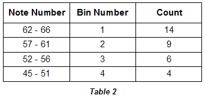
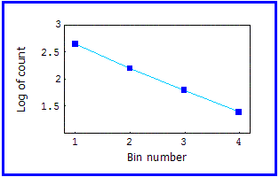

| Under such circumstances, binning the data can reveal patterns. Here is the same data grouped into four roughly equal-sized bins. |
|  |
| Here is the log-log plot. |
|  |
| Using a carefully chosen bin size, the plot illustrates the underlying fact that there approximately 3/2 as many notes in successively higher pitched bins. |
| If, instead of plotting log of the count against respective bin numbers, we choose to make the x-axis the log of the mid-wavelength of each bin, we would also obtain a straight line. |
| This is because the pitch wavelengths have a logarithmic relationship to each other other through the formula for finding the frequency of a given pitch: |
| Fp = Fref2d/12 |
| where Fp is the frequency of pitch we wish to calculate, Fref is the frequency of a reference pitch, and d is the intervallic distance between the two pitches as measured in semitones |
Return to Pitch Scaling.
© 2004 Harlan Brothers